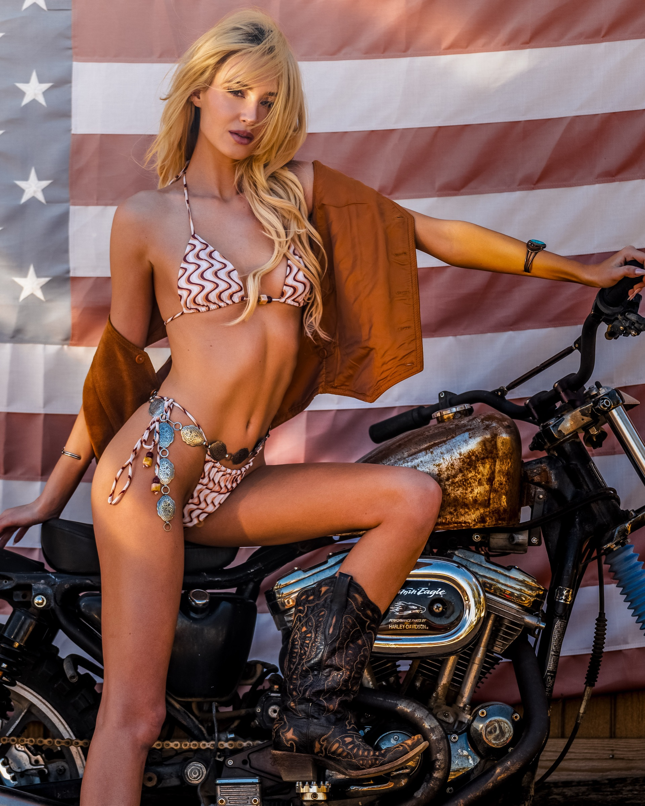
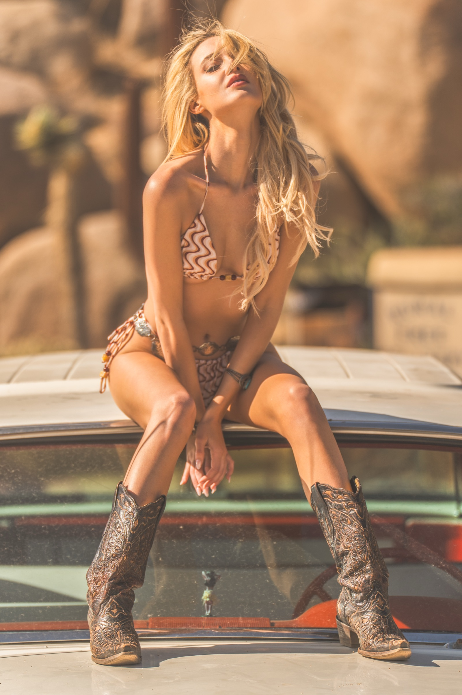
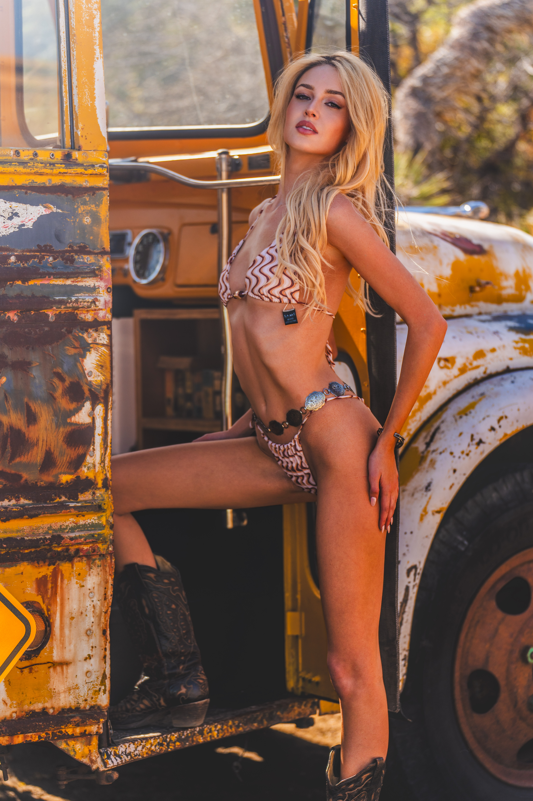

Out here, the silence isn’t empty — it’s alive. Bella moved through the space like someone who understands contrast deeply. Light and shadow, softness and structure, the wind and the absolute stillness between gusts. She made the ranch feel like a character instead of a backdrop.
The desert doesn't compete with Bella — it offers itself. Every open stretch of land becomes negative space around her, every rock formation a deliberate composition. She has that rare quality where the world doesn't overpower her; it bends slightly to fit her shape.
Mod West Ranch is all horizon—minimalism, heat shimmer, and negative space. Bella brought presence, intention, and a kind of cinematic quiet that can’t be faked. This shoot wasn’t about posing; it was about letting her energy settle into the landscape and catching whatever the desert gave back.